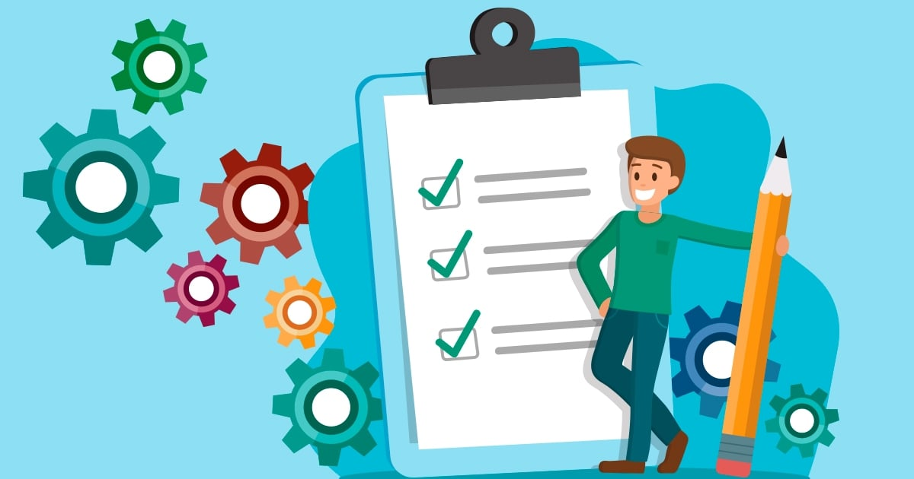

Como organizei minha primeira semana de estudos
Um relato sincero sobre erros, ajustes e o que funcionou de verdade.

Três ferramentas que uso todos os dias
Nada revolucionário, só o básico bem feito.

O que aprendi revisando meu próprio código
Voltar em um projeto antigo ensina mais do que parece.